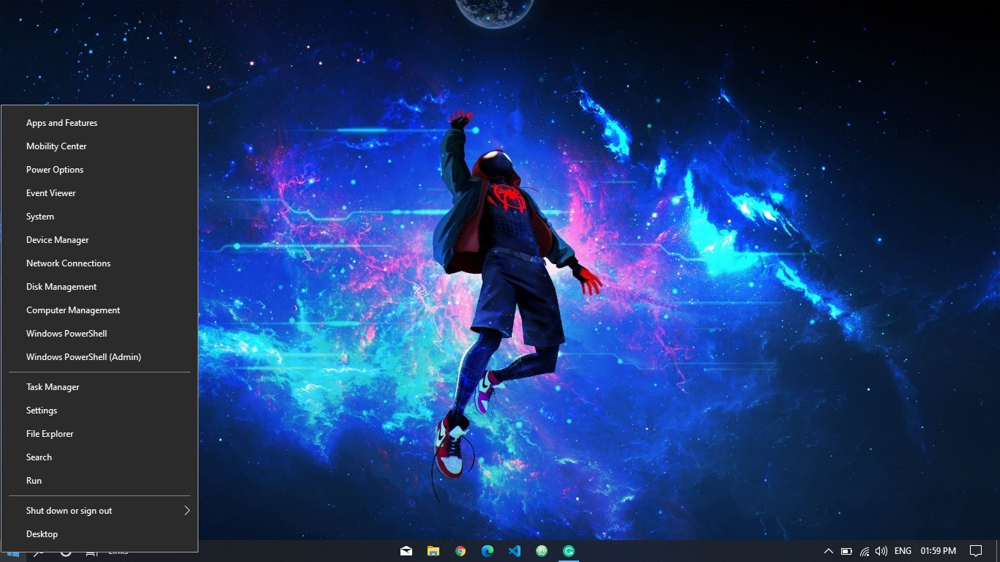

Secret-menu
Did you know about the secret menu in the taskbar? It has lots of shortcuts like the shut-down option, Windows PowerShell, search, run prompt, etc. which can save your time
To open the menu just use the "right-click" on the start button.

Emoji Keyboard
We always use emojis on your phone while chatting with our friends, but did you know that you can use emojis on your computer too. There is a secret emoji keyboard on your Windows 10 computer.
There is no option for an emoji keyboard(I guess) but you can use a shortcut.
Just press Start + semi-colon to use emojis where ever you want.

Fig: Emoji Keyboard